In Web Design I our class entered a contest to create PSAs on common issues in our community. My group decided to do our video on texting while driving. This video was placed in the video section of our sophomore portfolio.
Argentina Site
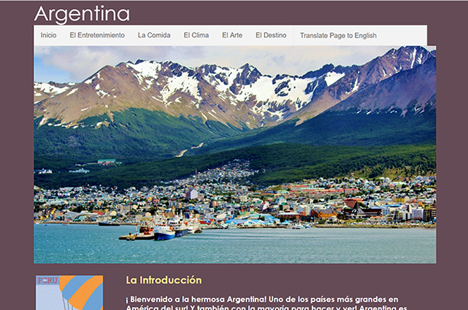
In Web Design I we collaberated with the Spanish classes in order to create a website. We were to create a travel site. While each of us had our own countires our main country for our site was Argentina. Though it was not responsive I believe my group did a good job coding our first full site, which you can view here.
Sophomore Portfolio
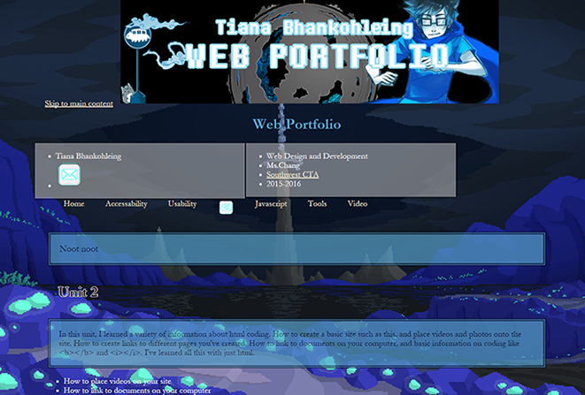
In Web Design I we created a practice portfolio. We used this portfolio to incorporate our learnings throughout the year and practice them. We had to create a banner for the top of our web page, and we had the freedom to personalize our portfolio to look as we pleased.
Quizmaker
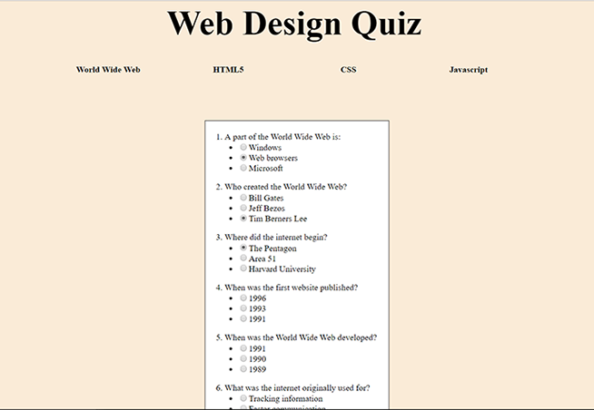
In Web Design II we were to create a quiz. This was an assignment to practice our skills in javascript. My partner and I tried to make the quiz layout as simple as possible so that we could focus more on coding the javascript aspect, instead of designing.
Winter Escape
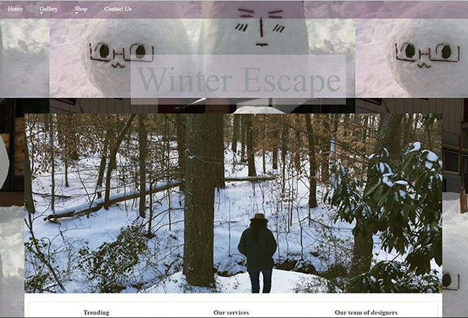
In Web Design II we created a winter themed index page. Our only guides were some tutorials on Lynda.com, and we had to incorporate most of what we saw in the videos into our index page. This was when I learned how to use media queries in order to make your page more repsonsive.
Promise Playground
In Web Design II our class entered the Congressional App Challenge. This is a short demo of the app that my group submitted for the challenge. Our app was created to help those with mental illness get through their lives with someone to talk to. We created this app because my group memebers and I have gone through similar issues, and would like to help others. Our final product turned into a questionare. This was not our original plan, for it was to be a game where you could interact more with the animals. My group hopes to be able to create the actual game one day.
Study Break
In Web Design II our assignment was to teach kids how to code an app using MIT App Inventor for Android phones. This is a short demo of the app we created. My group created Study Break to teach kids that came to our school how to code our app step by step. The app's purpose is to give the user something to do when they're taking a break from studying, hence the name "Study Break".
Graphic Design
Self Portrait
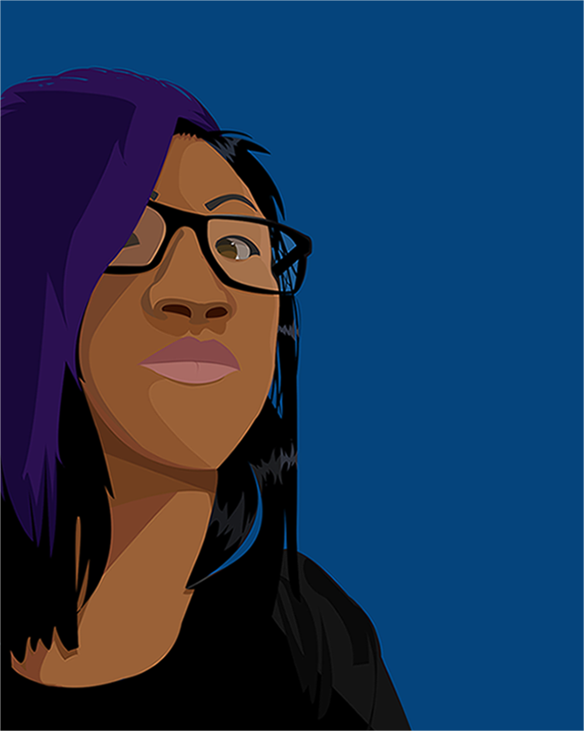
In Graphic Design I we were to create a self portrait of ourselves using Adobe Illustartor. Around this time was when we still being introduced to Illustrator. This was a project to practice the skills we we currently learning in Illustrator, such as using the pen tool.
Tokyo Animation Project
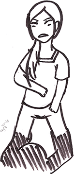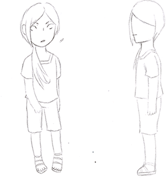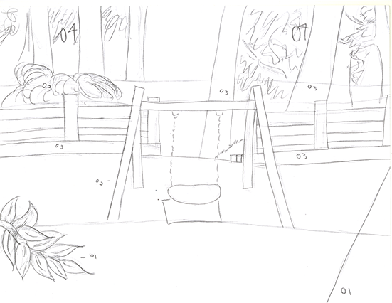
In Graphic Design II we teamed up with a group in Tokyo to animate some stories that members of the group came up with. The story that my group had selected was a story about a young girl that loses her shadow. Our group split into two teams, the technical team, and the art team. I was on the art team, we were required to create concept art and provide backgrounds and scenes for the technical sub-group. Much progress was made, we were going to have professionals come in to help us with our project. Sadly, the project was canceled due to difficulties.
Spanish Characters/Ads
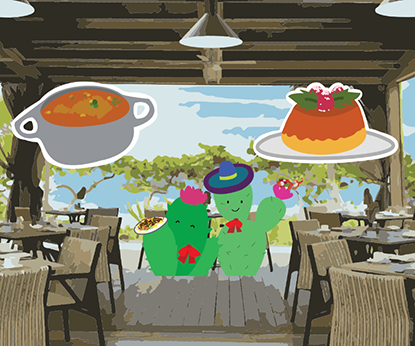
In Graphic Design II we were to design a character, and incorporate the chosen character into ads we were creating. The character was to act as a "tour guide", or a mascot for the Spanish sites we were creating in web design. In the end we chose the cute cactus one of our group members made, and created our ads. The first image is my character, and the second image is one of the ads I created. We created an Adobe Spark on our project that you can view here.
Design Firm
In Graphic Design III we were put into groups in order to create a design firm. The first phase of the project was to design the logo of our company. The first image are the sketches and roughs I made of logo ideas. The next phase of the project was to create an envelope, letterhead, and business card with the logo that your group had chosen. The second image is the buisiness card that I created using the logo we had chosen.
Misc.
The Curious Little Chick
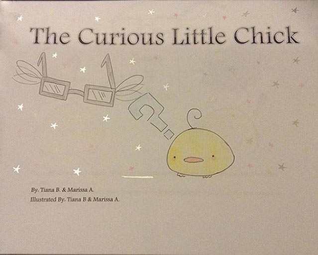
In Spanish I you were to create some kind of project that taught the names of household objects in Spanish. My partner and I decided to created a children's book on how to say objects in the bathroom in Spanish. Our main characters were a curious little chick, and the chick's guide, the glasses fairy.
Pancho Villa Infographic
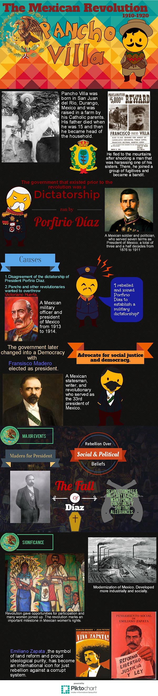
In World History 10 Honors, we chose a historical figure and created an infographic on them to teach the class about that person. My partner and I chose Pancho Villa, and compiled our research into this infographic. We didn't want our infographic to look to plain, so we drew up characters of the people in Pancho Villa's history, as well as Pancho Villa himself that you can see throughout the infographic.
Military vs Baseball Salaries
In English 10 Honors, our project was to create a video on issues in our community. My group decided to create a video to convince people that people in the military should have higher salaries than baseball players. In the video, a student, doing a project on military vs baseball salaries realizes why military workers deserve higher pay. The video took a while to compile, due to the weather.
Thanatopsis Translation
In English 11 Honors, our assignment was to translate the poem Thanatopsis into a more modern understanding with our own words. I thought the poem was very artistic and took my time translating it into my own words. I was told by my English teacher that she found it very pleasing to read, and that I am one of two people that recieved 100% on this assignment. As you have most likely concluded by now, I am proud of this translation because of that.


 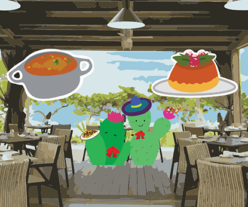
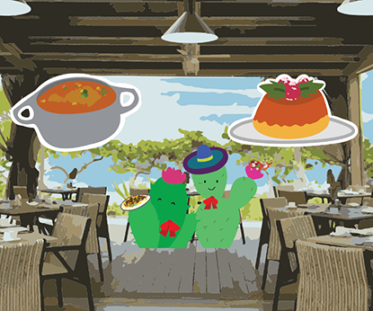